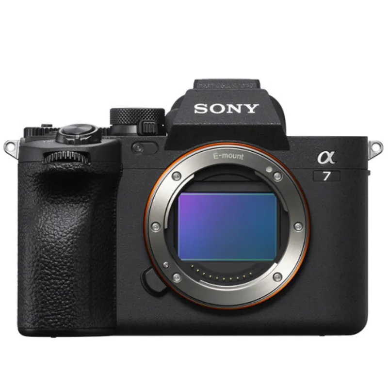

Reccomendations for cameras to buy
Sony A7 IV
Best overall camera
With excellent autofocus, image quality and video features, the Sony A7 IV is every bit the modern mirrorless hybrid.
Canon EOS R10

Best for beginners
With a compact build, good handling and modern autofocus, the Canon EOS R10 represents excellent value for beginners.
Sony A7R V
Best for professionals
With a huge pixel count and superb autofocus, the flagship Sony A7R V delivers outstanding stills when paired with a top-tier lens.
Canon EOS R7

Best for enthusiasts
If you can look past its limited range of native lenses, the EOS R7 is a fast, powerful camera that handles well and shoots excellent stills.